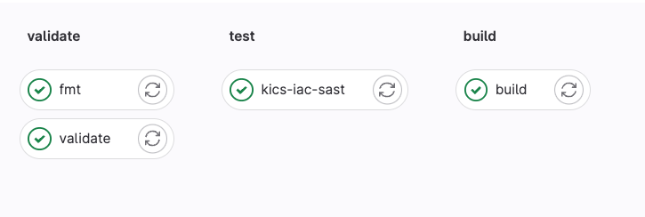
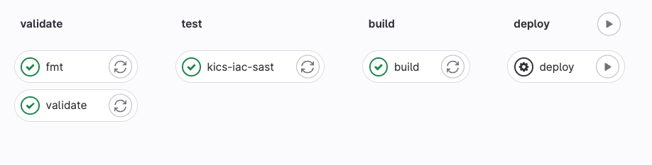

Gitlab Pipelines
Now lets setup a gitlab pipeline to run Terraform!
.gitlab-ci.yml
Info
Gitlab pipelines are configured via a yaml file called .gitlab-ci.yml
First step is we will need to configure our .gitlab-ci.yml
Tip
Gitlab also needs to access your AWS account. There are several ways to do this. The easiest being setting CI/CD variables for AWS_ACCESS_KEY_ID and AWS_SECRET_ACCESS_KEY. However, there are more secure ways and your client may have already integrated AWS with Gitlab
Configure below in .gitlab-ci.yml file
include:
- template: Terraform.latest.gitlab-ci.yml
Wait, that is it? Yes. Gitlab has all the jobs necessary in the above template
Ok lets push this to gitlab and see what happens
git checkout -b feature/demo-gitlab
git commit -am"fix: add .gitlab-ci.yml"
git push gitlab
You should see

Gitlab runs these jobs
- validate:
terraform validate - fmt:
terraform fmt - kics-iac-sast: a static scan for IaC code
- build:
terraform plan
Warning
It runs a plan successfully but terraform wants to re-create all the resources
When Terraform runs in Gitlab it doesn't know about the resources we have created because we have been using local state. Lets fix that!
Configure terraform to use remote backend
In main.tf update the terraform block to include the below. This tells terraform to use a remote http backend to store state
backend "http" {
}
Now we need to migrate our local state to gitlab. You need to create a gitlab personal access token to do this, see https://docs.gitlab.com/ee/user/profile/personal_access_tokens.html
Note
Token needs to have api scope
The script below will instruct terraform to init with remote state. We only need to do this once. You set the PROJECT_ID to the corresponding gitlab project and TF_USERNAME to your gitlab username and TF_PASSWORD to your gitlab personal access token
PROJECT_ID="45873656"
TF_USERNAME="travis.redfield"
TF_PASSWORD="$(pass /work/slalom/gitlab/travis.redfield/token)"
TF_ADDRESS="https://gitlab.com/api/v4/projects/${PROJECT_ID}/terraform/state/default"
terraform init \
-backend-config=address=${TF_ADDRESS} \
-backend-config=lock_address=${TF_ADDRESS}/lock \
-backend-config=unlock_address=${TF_ADDRESS}/lock \
-backend-config=username=${TF_USERNAME} \
-backend-config=password=${TF_PASSWORD} \
-backend-config=lock_method=POST \
-backend-config=unlock_method=DELETE \
-backend-config=retry_wait_min=5
You should see similar output. When terraform asks to copy your local state to new "http" backend answer yes
Initializing the backend...
Do you want to copy existing state to the new backend?
Pre-existing state was found while migrating the previous "local" backend to the
newly configured "http" backend. No existing state was found in the newly
configured "http" backend. Do you want to copy this state to the new "http"
backend? Enter "yes" to copy and "no" to start with an empty state.
Enter a value: yes
Successfully configured the backend "http"! Terraform will automatically
use this backend unless the backend configuration changes.
Initializing provider plugins...
- Reusing previous version of hashicorp/tls from the dependency lock file
- Reusing previous version of hashicorp/aws from the dependency lock file
- Using previously-installed hashicorp/tls v4.0.4
- Using previously-installed hashicorp/aws v4.66.1
Terraform has been successfully initialized!
Now push updated files to gitlab
git commit -am"fix: updating remote backend"
git push gitlab
Now gitlab should show no changes in the plan because it has the correct state
Add a new resource and apply with gitlab
Lets add a new resource and let gitlab apply it
First add below to main.tf. This will create and S3 bucket
# create an S3 bucket
resource "aws_s3_bucket" "example" {
bucket = "terraform-lnl-test-bucket"
tags = {
Name = "TerraformDemo"
}
}
Push to gitlab
git commit -am"fix: configure s3 bucket"
git push gitlab
The plan in gitlab should show creating an S3 bucket
Plan: 1 to add, 0 to change, 0 to destroy.
Create a merge request and merge to main. The pipeline should look like below

The deploy job runs terraform apply. It is manual job. Click play button to run it. The output should show
aws_s3_bucket.example: Creating...
aws_s3_bucket.example: Creation complete after 3s [id=terraform-lnl-test-bucket]
Apply complete! Resources: 1 added, 0 changed, 0 destroyed.
Destroy Resources
The great thing about terraform is that you can easily destroy all the resources you have created. When doing a poc or demo this is great feature!
terraform plan -destroy -out=plan.out
You should see output
Plan: 0 to add, 0 to change, 5 to destroy.
Now run apply
terraform apply plan.out